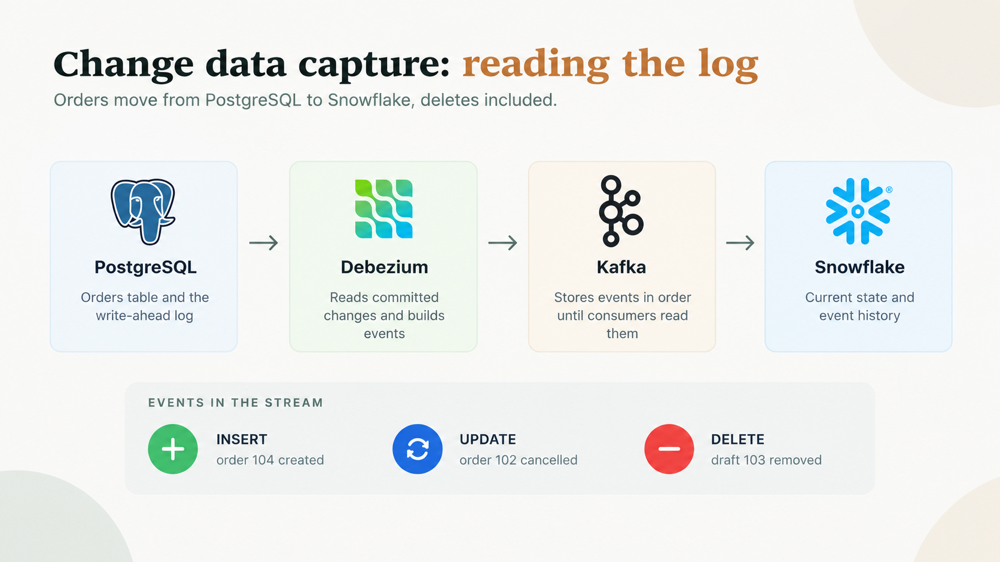

Journal
Change data capture, explained with one deleted order
Why copying a table on a timer misses deletes, how reading the database log fixes this, and what to do when the pipeline stops for two hours.

Polling is the first way most of us move data. Ask the source table what changed, copy the answer, repeat every minute. This works until someone deletes a row.
These are my notes from a design exercise: moving order data from PostgreSQL into Snowflake for an imaginary online shop. The shop and the numbers are made up. The design choices are the ones real pipelines face.
The problem: orders in PostgreSQL, reports in Snowflake
Customers place orders, change delivery details, cancel orders and delete unpaid drafts. PostgreSQL holds the official record. Management wants the same activity in Snowflake for reports, and wants every change visible there within 30 seconds.
Latency is the time between a change in the source and the moment analysts see the change. A customer cancels at 10:00:00. Analysts see the cancellation at 10:00:12. The latency is 12 seconds, inside the limit.
Five terms carry the rest of this note:
| Term | Meaning |
|---|---|
| OLTP | The system running the business in real time, such as PostgreSQL handling orders and payments. |
| OLAP | The system built for analysis, such as Snowflake answering which products earned the most this quarter. |
| Ingestion | Bringing data into a system. |
| Event | A record of a change, such as order 105 created or deleted. |
| Near-real-time | Changes arrive quickly enough to stay useful. A 30-second target counts. |
A database transaction and an event are related but different. A transaction is a group of operations the database treats as one unit. An event is the record of a change the pipeline captures.
Polling, and where the method breaks
Take a small orders table:
| order_id | customer | amount | status | updated_at |
|---|---|---|---|---|
| 101 | Mary | 2,500 | Completed | 10:00:00 |
| 102 | John | 1,800 | Pending | 10:01:00 |
| 103 | Peter | 3,200 | Pending | 10:02:00 |
The polling approach runs this query every minute:
SELECT * FROM orders WHERE updated_at > :last_sync;
last_sync holds the time of the last successful extraction
The last sync was at 10:00. At 10:01 the query returns John's order, because its updated_at is 10:01. For a small table with slow change, this is a fine design. Three problems appear as the table grows.
Hard deletes disappear
Peter deletes unpaid draft 103. PostgreSQL removes the row completely. The next query finds nothing to return, because no surviving row carries a newer updated_at. Snowflake keeps an order the source no longer has. A timestamp query sees a change only when a surviving row reports the change.
Load on the source
With hundreds of millions of rows, every poll uses CPU, memory and disk reads on the database serving customers. Indexes and careful queries reduce the cost. They do not remove the cost.
Latency
Poll every five minutes and a change waits up to five minutes before extraction starts. Poll every five seconds and the database takes far more queries, with no guarantee the data reaches Snowflake inside 30 seconds.
Change data capture reads the log
Change data capture, or CDC, reverses the question. The pipeline stops asking the table what changed. The pipeline reads a record of changes as the database commits them.
PostgreSQL already keeps this record for its own reliability. This record is the Write-Ahead Log, or WAL. PostgreSQL records each change in the WAL before the data pages reach their final place on disk, and uses the log for crash recovery. Log-based CDC reads the same log.
The raw WAL is not a ready-made list of business events. PostgreSQL's logical decoding reads the relevant log records and exposes them as row-level changes. A connector such as Debezium picks them up from there.
Three changes in the log look like this:
| Operation | What happened |
|---|---|
| INSERT | Order 104 is created for KSh 4,000. |
| UPDATE | Order 102 changes from Pending to Cancelled. |
| DELETE | Unpaid draft order 103 is removed. |
Log-based CDC captures all three, including the delete polling misses.
Other databases keep a similar log under another name:
| Database | Log used for CDC |
|---|---|
| PostgreSQL | WAL, read through logical decoding |
| MySQL | Binary log (binlog) |
| SQL Server | Transaction log, through its supported CDC or replication features |
The four parts of the pipeline
- PostgreSQL stores the orders and records every change.
- Debezium reads the logical change stream and turns each change into a structured event.
- Apache Kafka stores the events in ordered partitions, so each consumer reads at its own pace.
- Snowflake receives the events, loads them into tables and serves the analysis.
CDC does not require Kafka. Some designs send events straight to the destination or through another streaming platform. Kafka earns its place when you want buffering, replay, several consumers or independent scaling.
What a change event looks like
Order 102 changes from Pending to Cancelled. A simplified Debezium event looks like this:
{
"before": { "order_id": 102, "status": "Pending" },
"after": { "order_id": 102, "status": "Cancelled" },
"op": "u"
}
Illustrative JSON, not a complete Debezium message
Three parts matter. before holds the previous row, when available. after holds the new row. op names the operation: c for create, u for update, d for delete and r for a snapshot read.
Now the unpaid draft is deleted:
{
"before": { "order_id": 103, "status": "Draft" },
"after": null,
"op": "d"
}
The row is gone from PostgreSQL. The event still tells every downstream system about the deletion. CDC captures the fact of a delete, not only the rows left behind.
The columns inside a delete event depend on the connector setup and the database logging settings. Do not assume every deleted row arrives with every original value.
So what happens when the pipeline stops for two hours?
The first instinct is to restart the job and reload everything. Skip this. Recover from the last saved position, process the backlog and apply changes safely. Three terms help:
- Checkpoint, or offset
- A saved position showing how far the pipeline has read. For PostgreSQL CDC, the Log Sequence Number (LSN) marks a position in the WAL.
- Idempotency
- Applying the same operation twice leaves the same result as applying the operation once. Setting order 102 to Cancelled twice still leaves one cancelled order.
- Backlog
- The events produced while the pipeline was stopped, still waiting for processing.
The recovery plan:
- Resume from the saved position. Debezium stores connector offsets and restarts from the last one, provided the needed WAL is still available and the replication slot is valid.
- Keep the events while Snowflake catches up. Kafka holds events for consumers while they are down, within its retention limits and storage. If Debezium itself stopped, PostgreSQL must retain the WAL so the changes stay recoverable.
- Make processing safe against duplicates. Use the order primary key and event metadata, and update the matching order instead of inserting a new row per event. A Snowflake MERGE applies changes by key. MERGE alone does not give exactly-once processing, so handle duplicates on purpose and never let a stale event overwrite newer state.
- Process the backlog at a controlled rate. Batch or micro-batch, watch the queue lag and avoid uncontrolled full-table reloads. Add resources when measurements justify them.
- Check the pipeline has caught up. Track source-to-destination latency, the oldest unprocessed event, consumer lag, WAL retention, ingestion errors and row-level consistency. Declare recovery only when freshness is back inside the target.
Putting numbers on the outage
The exercise sets the load at 50,000 orders per minute.
| Quantity | Value | Working |
|---|---|---|
| Incoming rate | 833.3 per second | 50,000 ÷ 60 |
| Events in 2 hours | 6,000,000 | 50,000 × 120 minutes |
| Processing rate (assumed) | 1,500 per second | An assumption for the exercise |
| Net backlog reduction | 666.7 per second | 1,500 − 833.3 |
| Time to clear the backlog | about 9,000 seconds | 6,000,000 ÷ 666.7, close to 2.5 hours |
The working assumes steady rates and no other bottleneck. If 50,000 counts new orders only, updates and deletes add to the load.
Catching up requires a processing rate above the arrival rate. At 833 events per second in and 833 out, the backlog never shrinks.
During the outage the pipeline misses the 30-second target for the affected events. The design goal is to meet the target in normal operation and restore the target fast after a failure.
Where deletes live in Snowflake
Capturing a delete is half the job. The other half is choosing how Snowflake stores the delete. Two common patterns:
Current state
Remove the row
Best when analysts want a table showing the latest order state. The delete event names the order, and the consumer removes its row.
Event history
Append the event
Best for audit trails and history. An append-only table stores the order key, the event type and metadata, and proves the order existed and was deleted.
A solid platform uses both: a raw event table for traceability and a curated current-state table for reports.
Keep cancellation and deletion apart. A cancellation is usually an UPDATE to status Cancelled, and the order stays. A hard delete is a DELETE, and the row is gone. The transformation logic treats them differently.
Mistakes to avoid
- Treating a cancellation like a deletion. One changes a status. The other removes a row.
- Reloading everything after a short outage. Resume from the saved offset.
- Ignoring WAL growth. A stalled connector leaves the slot holding log on the source database.
- Inserting a row for every event in a current-state table. Update the matching order by key.
- Assuming MERGE means exactly-once. Handle duplicates and stale events yourself.
- Assuming a delete event carries every column. Check the connector and logging settings.
Why this matters
A polled copy of the orders table looks correct until someone checks the deleted drafts. CDC turns each change, deletes included, into data the pipeline carries. Nothing depends on a surviving row to announce the change.
Key takeaways
- Polling misses hard deletes. A timestamp query needs a surviving row to notice a change.
- Log-based CDC reads the log the database already keeps. Inserts, updates and deletes all arrive as events.
- Each tool has one job. Debezium observes, Kafka stores and distributes, Snowflake analyses.
- Recover from a checkpoint. Resume from the saved offset, apply changes idempotently and clear the backlog at a controlled rate.
- Store deletes on purpose. Keep a current-state table for reports and an event history for traceability.